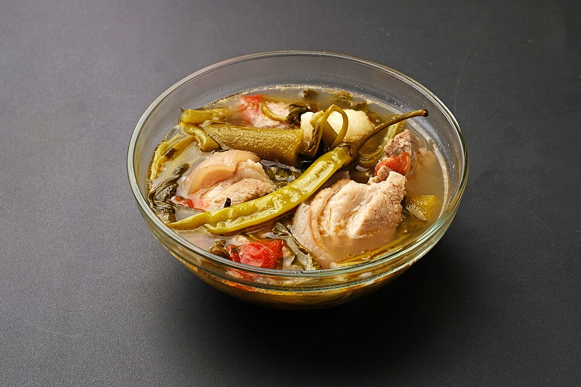

Sinigang

Description
Sinigang, sometimes anglicized as sour broth, is a Filipino soup or stew characterized by its sour and savory taste. It is most often associated with tamarind (Filipino: sampalok), although it can use other sour fruits and leaves as the souring agent such as unripe mangoes or rice vinegar. It is one of the more popliar dishes in Filipino cuisine. This soup, like most Filipino dishes, is usually accompanied by rice.
Ingredients
- 2 lbs. pork belly
- 1 lb. young tamarind
- 1 bunch water spinach
- 8 pieces string beans
- 2 pieces CHinese eggplant
- 1 piece daikon radish
- 8 pieces okra
- 2 pieces tomatoes
- 2 pieces long green pepper
- 1 piece onion
- 2 quarts water
- Fish sauce and ground black pepper
Steps
- Boil the young tamarind in 2 quarts of water for 40 minutes. Filter the tamarind broth using a kitchen sieve or a strainer. Squeeze the tamarind afterwards to extract its remaining juices.
- Pour the tamarind broth into a cooking pot. Let it boil and then add the onion, pork belly, and half the amount of the tomatoes.
- Skim-off the floating scums, pour 1 tablespoon fish sauce, cover and continue to simmer for 1 hour.
- Add daikon radish and eggplants. Cook for 5 minutes.
- Add the long green pepper, string beans, remaining tomatoes, and okra. Cook for 3 minutes.
- Add the chopped water spinach stalks and season with fish sauce and ground black pepper. Cook for 2 minutes.
- Put the water spinach leaves. Cover and turn the heat off. Let the residual heat cook the leaves for 3 minutes before serving.
- Share and enjoy!
Home